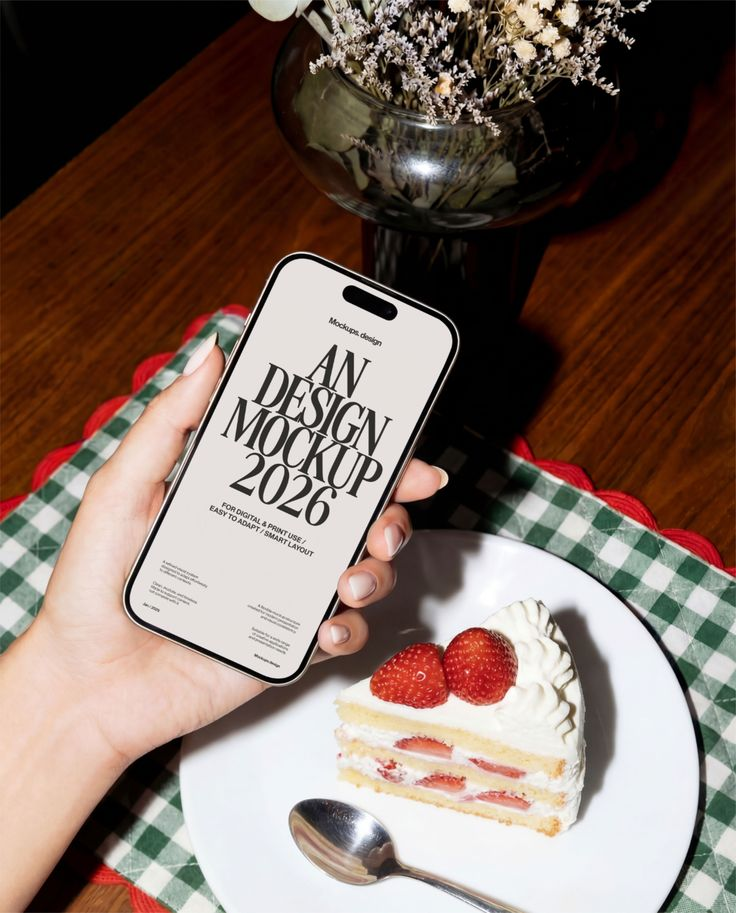
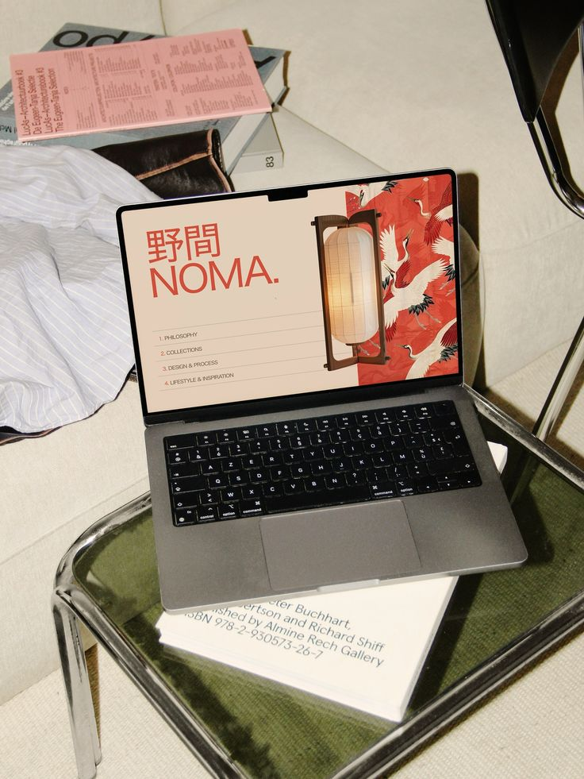

UX Designer
Three Case study deep dives, plus the Work and Education behind them. Hover a card to read it, or filter below.

Case study A shared bank for couplesA joint-finance app concept helping couples manage shared money without losing independence. Research, flows and a full UI kit.
View case studyIndustry-taught, project-based programme. Covered user research, prototyping, design systems, UI, data analytics and UX ethics. Most coursework done in collaboration with real companies.
About the programme
Case study End-of-shift handover toolA mobile tool for service teams to hand over notes, tasks and reports between shifts — designed end-to-end with usability testing.
View case studyLast-minute tourism marketplace in Iceland. Designed end-to-end in Figma — research, design system, prototyping and CRO.
Marketplace for last-minute tours in Iceland. Built the brand, design system and a conversion-focused booking flow.
View case study Work
Digital Marketing Specialist
Datera & Birtingahúsið
Work
Digital Marketing Specialist
Datera & Birtingahúsið
Digital marketing for Datera and Birtingahúsið: Google, Meta and SEO campaigns, media planning and data-driven optimisation. I came to product design already used to reading real user behaviour and being measured on whether a decision worked.
One-year MSc taught in English. Covered consumer behaviour, brand development, market research and marketing metrics, using data to shape strategy across digital and international markets.
About the degree Education
BSc Business Administration & Computer Science
Reykjavík University
Education
BSc Business Administration & Computer Science
Reykjavík University
Business with a technical edge. Named to the Dean's List, spring 2015.
About the degree